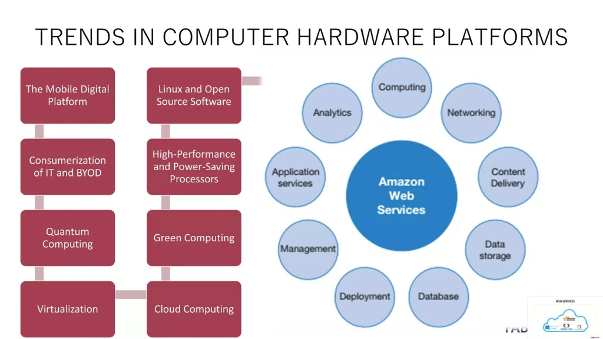

A formal introduction to computing platforms — the hardware, operating systems, web,
mobile, cloud, and virtualization foundations upon which every modern application is built.
This lecture guides students step by step from first principles to current industry practice.
Course: Platform TechnologiesUnit: Foundation ConceptsLessons: 10Level: Introductory
What You Will Be Able to Do
Define a computing platform and explain its layered structure.
Differentiate hardware, operating system, web, mobile, and cloud platforms.
Compare virtualization and containerization technologies.
Explain cross-platform development and current industry trends.
Foundation Module at a Glance
This module establishes the conceptual foundation for the course. Each lesson builds
on the last, moving from the physical machine to the software layers, networks, and
services that define a "platform" in modern computing.
10Lessons in this module
6Platform categories covered
8Diagrams & illustrations
Lesson 01Foundation
Introduction to Platform Technologies
Before we can study individual platforms, we must agree on what the word
"platform" actually means in computing, and why the concept matters to every developer, IT
professional, and organization.
Learning Objectives
Define the term "platform technology" in a computing context.
Explain why platforms matter to software development and business operations.
Identify the major categories of platforms studied in this module.
1.1What Is a Platform?
In computing, a platform is the underlying environment on which software
is built, deployed, and executed. It is the combination of hardware architecture, operating
system, runtime environment, and supporting services that an application depends on to function.
A useful analogy is construction: a building requires a foundation before walls and rooms can be
added. In the same way, an application requires a platform — hardware, operating system, and
supporting software — before it can run.
Platform technologies therefore refer to the collective set of tools, frameworks, operating
systems, and infrastructure that enable the development, deployment, and operation of software
systems.
1.2Why Platform Technologies Matter
Compatibility: Understanding platforms allows developers to build software that works correctly on the intended systems.
Efficiency: Choosing the right platform reduces development time and operating cost.
Scalability: Modern platforms, particularly cloud platforms, allow systems to grow with demand.
Career relevance: Employers expect IT graduates to be fluent in hardware, operating systems, web, mobile, and cloud platforms.
The hardware and/or software environment on which an application runs.
Runtime Environment
The software layer that provides the resources a program needs while it is executing.
Infrastructure
The underlying physical and virtual resources — servers, storage, networks — that support platforms.
Quick Check
In your own words, define "platform technology."
Give one real-world example of a platform you use daily.
Lesson 02Foundation
The Concept of a Computing Platform
Every computing platform is organized in layers. Understanding this
layered structure is the single most important foundation for the rest of the course.
2.1The Platform Stack
A platform can be visualized as a stack of layers, each one depending on the layer below it.
At the base is physical hardware; at the top are the applications end users interact with.
Step through the diagram below from bottom to top.
Figure 2.1. The platform stack. Each layer relies on the one directly beneath it.
2.2Hardware Platforms vs. Software Platforms
Aspect
Hardware Platform
Software Platform
Definition
The physical computing components (processor architecture, devices)
The programs and systems that run on top of hardware
Examples
x86, ARM, Raspberry Pi
Windows, Android, a web browser
Changeability
Fixed once manufactured
Can be updated or replaced
Student focus
Architecture & compatibility
Development & deployment
Teaching Note
Emphasize to students that a single application, such as a mobile banking app, actually
depends on all four layers at once: it runs on hardware (a phone's processor), inside
an operating system (Android or iOS), through a runtime (the app framework), as an application
layer program.
Quick Check
List the four layers of the platform stack in order.
Explain why the application layer cannot function without the layers beneath it.
Lesson 03Software Platforms
Operating Systems as a Platform
The operating system is the most fundamental software platform: it
manages hardware resources and provides the environment in which all other software runs.
3.1Core Functions of an Operating System
Process management — allocating CPU time to running programs.
Memory management — allocating and protecting memory used by programs.
File system management — organizing and storing data on disk.
Device management — communicating with hardware through drivers.
User interface — providing a way for users to interact with the system.
Figure 3.1. Simplified operating-system architecture, from applications down to hardware.
3.2Major Operating System Families
Family
Typical Use
Example Versions
Windows
Desktop & enterprise computing
Windows 11, Windows Server
macOS
Desktop computing (Apple hardware)
macOS Sonoma, Sequoia
Linux
Servers, development, embedded systems
Ubuntu, Fedora, Debian
Unix
Enterprise servers, legacy systems
AIX, Solaris
Key Terms
Kernel
The core of the operating system that directly manages hardware resources.
Driver
Software that allows the operating system to communicate with a specific hardware device.
System Call
A request made by a program to the kernel for a service, such as reading a file.
Quick Check
Name three core functions of an operating system.
Why is Linux the dominant operating system on web servers?
Lesson 04Web Platforms
Web Platforms and Web Technologies
The web browser has become one of the most important application
platforms in existence — an environment in its own right, on top of the operating system.
4.1The Client–Server Model
Web platforms operate on a client–server model. The client (typically a
browser) sends a request over the network; the server processes that request and returns a
response, usually in the form of HTML, JSON, or other data.
Figure 4.1. A client sends a request; a server processes and responds.
4.2Front-End vs. Back-End
Layer
Responsibility
Common Technologies
Front-End
What the user sees and interacts with
HTML, CSS, JavaScript
Back-End
Business logic, data processing
Node.js, PHP, Python, Java
Database
Persistent data storage
MySQL, PostgreSQL, MongoDB
Key Terms
Browser Engine
The software component that renders web pages, e.g. Blink or WebKit.
API
An interface that allows one piece of software to request services from another.
Quick Check
Describe the client–server model in your own words.
Is the browser itself considered a platform? Justify your answer.
Lesson 05Mobile Platforms
Mobile Platforms
Mobile platforms bring the same layered structure to handheld devices,
with two ecosystems dominating the global market.
5.1The Two Dominant Ecosystems
Figure 5.1. The two dominant mobile operating system ecosystems.
5.2Native vs. Hybrid Mobile Apps
Native apps are built specifically for one platform using its official language and tools, offering the best performance.
Hybrid apps are built once using web technologies and packaged to run on multiple platforms, trading some performance for development speed.
Teaching Note
Ask students to check the settings menu of their own phone and identify their device's
operating system, version number, and app store — this grounds the lesson in something they
already own.
Quick Check
Compare Android and iOS in terms of openness.
What is the main trade-off between native and hybrid mobile development?
Lesson 06Cloud Platforms
Cloud Computing Platforms
Cloud platforms deliver computing resources — servers, storage,
databases, and software — over the internet, replacing the need to own physical infrastructure.
6.1The Three Service Models
Figure 6.1. IaaS, PaaS, and SaaS — increasing levels of provider responsibility from left to right.
6.2Major Cloud Providers
Amazon Web ServicesMicrosoft AzureGoogle Cloud PlatformIBM Cloud
Key Terms
IaaS
Infrastructure as a Service — rented virtual servers, storage, and networking.
PaaS
Platform as a Service — a ready-made environment for building and deploying applications.
SaaS
Software as a Service — fully managed applications delivered over the internet.
Quick Check
Which cloud service model gives the developer the most control?
Classify Gmail, Google App Engine, and AWS EC2 by service model.
Lesson 07Infrastructure
Virtualization and Containerization
Modern platforms rarely run directly on physical hardware. Instead,
they use virtualization or containerization to run multiple isolated environments efficiently.
7.1Virtual Machines vs. Containers
Figure 7.1. Virtual machines each carry a full guest OS; containers share the host OS kernel, making them lighter weight.
Aspect
Virtual Machine
Container
Isolation Level
Full OS-level isolation
Process-level isolation
Startup Time
Minutes
Seconds
Resource Use
Heavier (full guest OS)
Lighter (shared kernel)
Common Tool
VMware, VirtualBox, Hyper-V
Docker, Podman
Key Terms
Hypervisor
Software that creates and manages virtual machines by allocating hardware resources to each.
Container Image
A lightweight, standalone package that includes everything needed to run a piece of software.
Quick Check
Why do containers start faster than virtual machines?
Name one scenario where a full virtual machine is preferable to a container.
Lesson 08Development Practice
Cross-Platform Development
Rather than building separate applications for every platform,
developers increasingly write one codebase that runs across many environments.
8.1Write Once, Deploy Everywhere
Figure 8.1. A shared codebase compiled or packaged for multiple target platforms.
8.2Popular Cross-Platform Frameworks
FlutterReact Native.NET MAUIElectron
8.3Benefits and Trade-offs
Benefit
Trade-off
Faster development, one codebase
May not use every native device feature
Lower maintenance cost
Slightly larger app size in some frameworks
Consistent user experience across devices
Performance can lag true native apps
Quick Check
What problem does cross-platform development solve for businesses?
Name two cross-platform frameworks discussed in this lesson.
Lesson 09Trends
Emerging Platform Trends
Platform technologies continuously evolve to incorporate advanced cloud architectures, hardware acceleration, and decentralized systems.
9.1Hardware and Cloud Evolution

Figure 9.1. Key trends in hardware platforms and cloud ecosystems.
Quick Check
Identify two major hardware trends that impact cloud infrastructure.
Lesson 10Industry Outlook
Emerging Platform Trends
The platform landscape continues to evolve. This lesson surveys
current directions students should be aware of entering the field.
10.1Trends Shaping the Next Generation of Platforms
Edge Computing: Processing data closer to where it is generated, reducing latency for IoT and real-time applications.
Serverless Computing: Developers deploy code without managing servers directly; the cloud provider handles scaling automatically.
Low-Code / No-Code Platforms: Visual development tools that let users build applications with minimal hand-written code.
Artificial Intelligence Platforms: Pre-built AI and machine learning services integrated directly into cloud platforms.
Progressive Web Apps (PWAs): Web applications that behave like native mobile apps, blurring the line between web and mobile platforms.
Teaching Note
Encourage students to research one emerging trend in depth for a short presentation,
connecting it back to the platform stack introduced in Lesson 2.
Quick Check
What advantage does serverless computing offer developers?
How do Progressive Web Apps combine web and mobile platform concepts?
Lesson 10Summary
Module Summary & Review Questions
Use this closing lesson to consolidate the foundation established
across Lessons 1–10 before advancing to the next module.
10.1Key Takeaways
A platform is the layered environment — hardware, operating system, middleware, and application — that software depends on.
Operating systems manage hardware resources and provide the base software platform.
Web platforms rely on the client–server model to deliver applications through a browser.
Mobile platforms are dominated by the Android and iOS ecosystems.
Cloud platforms deliver infrastructure, platforms, and software as a service (IaaS, PaaS, SaaS).
Virtualization and containerization allow multiple isolated environments to run efficiently on shared hardware.
Cross-platform development and emerging trends continue to reshape how platforms are built and consumed.
10.2Review Questions
1. Definitions
Define "platform technology" and give two examples from different categories.
2. Layers
List and describe the four layers of the platform stack.
3. Comparison
Compare IaaS, PaaS, and SaaS using a real-world example for each.
4. Architecture
Explain the difference between a virtual machine and a container.
5. Application
Describe the client–server model and identify the client and server in a mobile banking app.
6. Synthesis
Choose one emerging trend and explain how it could change platform technologies in the next five years.
Next Module
Module 2 will build on this foundation by examining platform architecture in depth,
including networking fundamentals, system integration, and platform security.